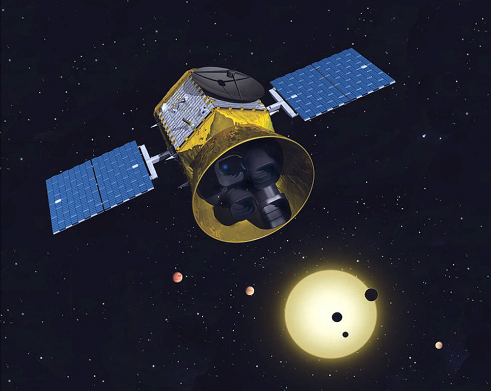
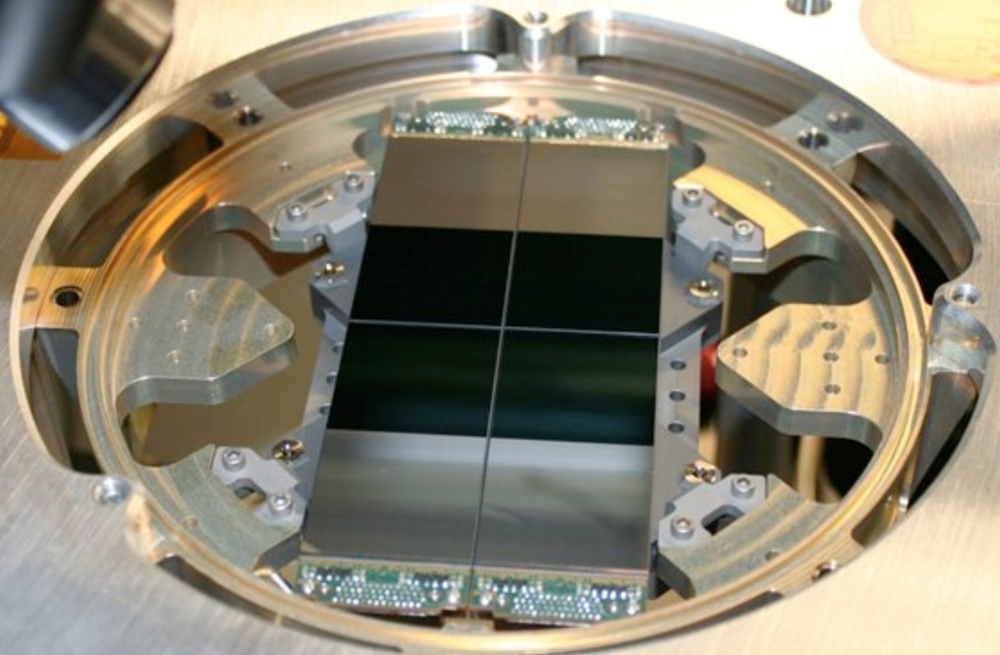
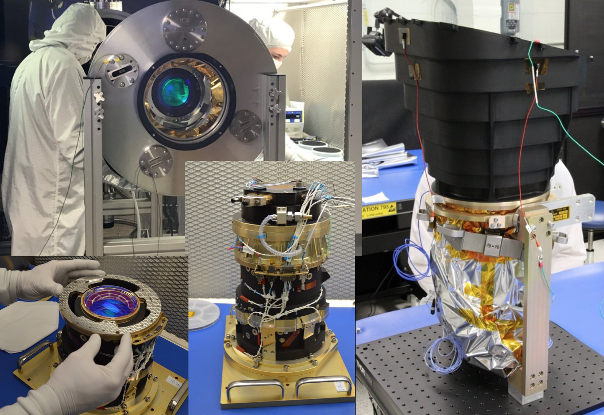

The TESS observatory consists of the spacecraft and the instrument. The TESS observatory has a single instrument, a camera suite composed of 4 wide field optical cameras and their associated hoods, mount, sun shield, and Data Handling Unit (ADHU). The spacecraft refers to the subset of the observatory that does not include the Instrument. The spacecraft provides power via two deployable solar arrays.

Image Credit: MIT
TESS cameras
TESS is equipped with four identical refractive cameras, each with a 2000x2000 pixel CCD that provides a 24x24 degree field-of-view (FOV). The combined FOV from all four cameras yields a 24x96 degree observing sector. Each camera consists of a CCD detector assembly, a lens assembly, and a lens hood. The instrument is being built at MIT in Cambridge, MA. An overview of the FOV coverage and observing strategy for the mission can be found in the Operations page.

Image Credit: MIT

Image Credit: MIT

Image Credit: MIT
CCD detectors
The CCD detectors, manufactured at MIT's Lincoln Laboratory, are deep depletion frame transfer CCDs that are extremely efficient for photon detection. They are a derivative of silicon CCDs previously developed for space-based x-ray missions including NASA's Chandra X-ray observatory and several Japanese missions.

Image Credit: MIT

Image Credit: MIT
Bandpass
TESS will observe a large number of M dwarfs for several reasons. Planets are easier to detect around these small stars (the planets induce larger transit signals). Most nearby stars are M dwarfs. Because M dwarfs are cool and red, the TESS bandpass will be more sensitive to red wavelengths. These considerations led to the choice of a 600 to 1000 nm bandpass. The width of 400 nm was the largest practical choice for the optical design.
 The TESS spectral response function (black line), defined as the product of the long- pass filter transmission curve and the detector quantum efficiency curve. Also plotted, for comparison, are the Johnson–Cousins V, R C , and I C filter curves and the Sloan Digital Sky Survey z filter curve. Each of the functions has been scaled to have a maximum value of unity. Image Credit: Ricker et al. (2015)
The TESS spectral response function (black line), defined as the product of the long- pass filter transmission curve and the detector quantum efficiency curve. Also plotted, for comparison, are the Johnson–Cousins V, R C , and I C filter curves and the Sloan Digital Sky Survey z filter curve. Each of the functions has been scaled to have a maximum value of unity. Image Credit: Ricker et al. (2015)

TESS will monitor a much larger sample of M stars compared to Kepler, thus the bandpass extends further to red wavelengths. Image Credit: Zach Berta-Thompson with data from Sullivan at al. (2015)
Spacecraft
The spacecraft is being built by Orbital ATK in Dulles, VA, where the Mission Operations Center (MOC) is located. The spacecraft consists of the Mechanical, Electrical Power, Command & Data Handling, RF Communications, Attitude Control, Flight Software, Hydrazine Propulsion, Thermal Control, and Harness Subsystems. TESS will be based on Orbital ATK’s LEOStar(TM)-2 platform, a exible, high-performance spacecraft for space and Earth science, remote sensing and other applications. LEOStar-2 can accommodate various instrument interfaces, deliver up to 2 kilowatt orbit average payload power, and support payloads up to 500 kilograms. Performance options include redundancy, propulsion capability, high data rate communications, and high-agility/high-accuracy pointing. TESS will be the eighth LEOStar-2 based spacecraft built for NASA.

Image Credit: Orbital ATK
Launch Mass: 350 kg (772 lb.)
Solar Arrays: 400 W (EoL) Two wing solar array, fixed and articulating modes
Stabilization: 3-Axis via 4 Hydrazine thrusters, Four wheel fine-pointing ACS
Orbit: 17 Earth-radii perigee, 59 Earth-radii apogee